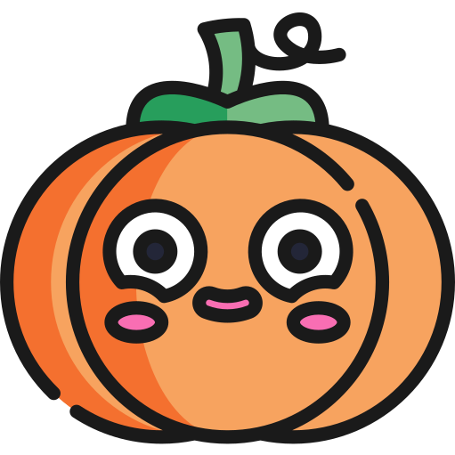

Spooky Halloween
Ej att förväxla med Alla helgons dag.
För filmen från 1978, se Alla helgons blodiga natt. För filmen från 2007, se Halloween (2007). För filmen från 2018, se Halloween (2018).
För den tyska musikgruppen, se Helloween. För King Diamonds musiksingel, se Halloween (musiksingel).
Halloween, alternativt Hallowe'en (från engelskans [All] hallows eve[ning], '[alla] döda själars afton'[1]) är en högtid som infaller den 31 oktober. Halloween har sitt ursprung på Irland och delvis i Skottland, via USA, dit många irländska emigranter kom under 1840-talets svält- och nödår.
Halloween är inte synonymt med den i Sverige uppmärksammade allhelgonadagen[2] och allhelgonahelgen, även om tidpunkten är liknande och båda högtiderna anknyter till döden och döda[3]. halloweentradition bland barn är att klä ut sig i spökkostymer, och gå runt i kvarteret för att be grannarna om bus eller godis, liknande den sekulära påsktraditionen med påskkärringar i Sverige och Finland. I engelsktalande nationer kan denna högtid även gå under benämningen "Allhalloween",[4] "All Hallows' Eve" eller "All Saints' Eve".